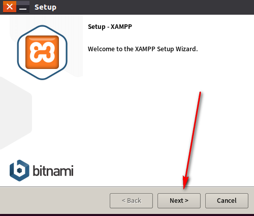
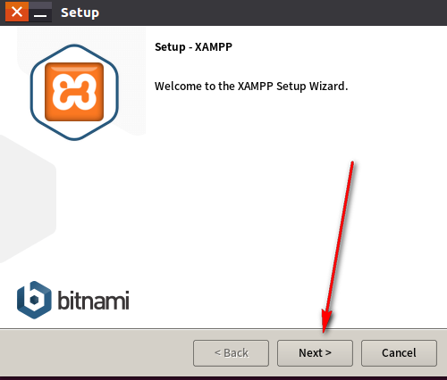
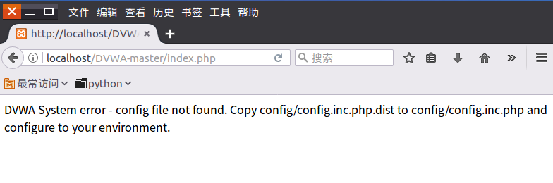
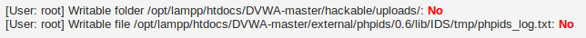
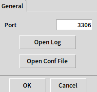
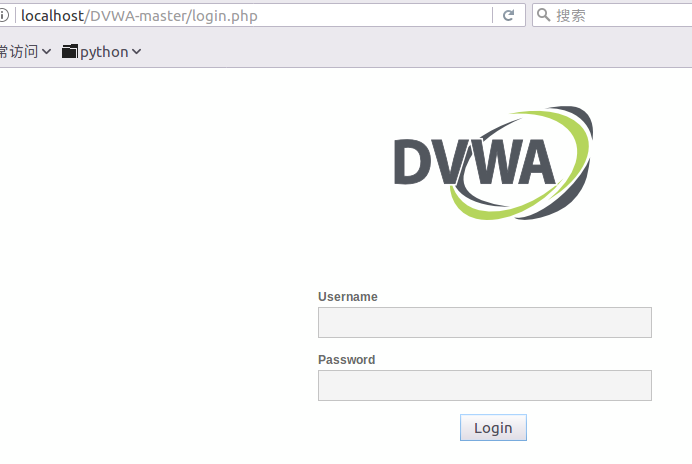

文章写于2017年7月6日，很久之前的东西了。
0X01 主机配置
操作系统：Ubuntu-Kylin-16.04-LTS_x64（VritualBox虚拟机）
相关组件：XAMPP+DVWA
0X02 DVWA简介
DVWA是一个用来进行安全脆弱性鉴定（练习挖洞）的PHP/MySQL应用。旨在帮助安全爱好者（黑客白客红客白帽子黑帽子绿帽子等）测试自己的专业技能和工具提供合法的环境（不要瞎搞别人网站，这样不好...），提升技术能力的同时更好的维护比特世界的和平。
0X03 XAMPP简介
XAMPP（Apache+MySQL+PHP+PERL）是一个功能强大的建站集成软件包。这个软件包原来的名字是 LAMPP，但是为了避免误解，最新的几个版本就改名为 XAMPP 了。由于DWVA需要PHP环境，嗯，就由XAMMP来守护了。
0X04 XAMPP和DVWA安装
首先访问官网 https://www.apachefriends.org/zh_cn/download.html 然后点击下载：

接着就会弹个框：

去一趟茅房回来就下完了，你要是嫌弃7下的太慢，可以去下5.6，速度会快些，接着就是安装。
安装过程如下（记得加权限，然后）：
 
一直点击next就行了……

一直点击next就行了……
 这里告诉我们XAMPP被安装在/opt/lampp文件（linux一切皆文件）里面。最后点击Finish就完成了安装。
这里告诉我们XAMPP被安装在/opt/lampp文件（linux一切皆文件）里面。最后点击Finish就完成了安装。
启动XAMPP
#cd /opt/lampp
#./manager-linxu-x64.run
或者
#/opt/lamp/./manage-linux-x64.run

下面我们开始安装DWVA：
首先我们登录官网 http://www.dvwa.co.uk/ 点击DOWNLOAD下载最新版的DWVA，是一个zip文件。

然后将文件解压（提取）到/opt/lamp/htdocs/目录下


接着我们打开XAMPP的MySQL（默认只开了Apache）

然后访问 http://localhost/DVWA-master/index.php 诶!?报错

嗯，根据报错信息可知是配置文件有问题（废话啰），同样的根据提示我们知道要将文件名config.inc.php.dist改为config.inc.php（这里其实涉及到一个linux命令copy的用法，具体可自行百度： http://www.linuxdiyf.com/viewarticle.php?id=38590 ）。改完名字之后就可以访问了，页面会自动跳转到： http://localhost/DVWA-master/setup.php 。然后我们用gedit打开这个文件config.inc.php看看是个什么东西，(⊙o⊙)哦原来是配置文件（废话连篇有木有），我们修改两个地方（1、数据库密码，我知道玩lol的你输入这个密码肯定飞快，不过我是玩dota的。2、安全等级设置为low，简单点容易玩，默认是难的。）

打开之后长这样：

怎么玩呢？我不知道啊，于是我瞎点了几下，

MMP又报错了，根据提示我们知道问题出在red部分,嗯，我们去修改一下所有带红色的地方的配置。
1、搞定PHP function allow_url_include：Disabled
找到php的配置文件，修改allow_url_include=Off 为allow_url_include=on（参考http://php.net/manual/zh/filesystem.configuration.php#ini.allow-url-include）

然后修改/opt/lamp/etc/php.ini

2、解决reCAPTCHA key，配置文件里面有个谷歌连接，点进去剩下的估计你也看得懂应该知道该怎么做额。


3、解决最后的两个NO

我们给这两个文件加权，运行命令：

然后点击

纳尼!?

只好回头再看看XAMPP的数据库配置文件，你会发现他的password默认是被注释了，我们取消注释。

最后你会发现不管怎么搞还是报错……这就尴尬了……
经过尝试，我发现以下配置可以进入登录界面。
XAMPP配置如下：

密码还是按照默认的注释掉

DVWA配置如下：

接着你就能进入登录界面了。恭喜！
http://localhost/DVWA-master/login.php

输入账号密码然后登录就能愉快的玩耍了。

什么？你进不去？账号密码是什么？预知后事如何，请听下回分解。
下集预告：
欢迎来到DVWA的世界，这是你的第一关，登录破解……